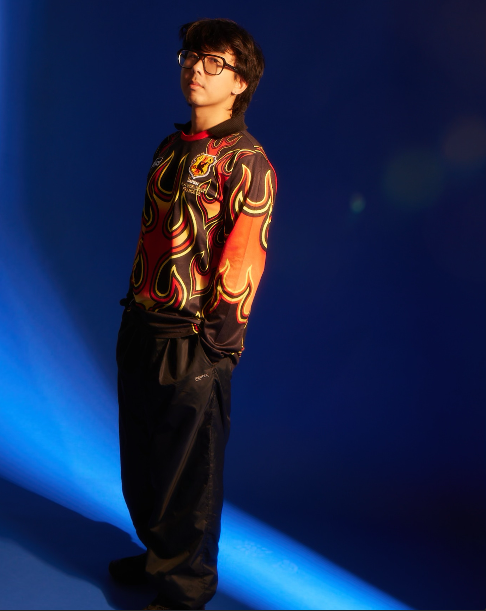

Live it and love it, baby!
Home-grown in NYC's euphoric club playgrounds, Manimogo explores modern prog house that fills the gaps between electro, house, and trance. It's low-friction, well-lubricated mischief emerging from the 90s rave palette to keep the gears gyrating.
From NYC to SF, Mexico City to Tokyo, he has played alongside forward-thinking artists like Dazegxd, NextDimensional, and Justin Jay — in addition to joining Pat Lok on his 2024 Asia tour. As a recurring selector in Japan's house circuit, he has played across intimate record bars and club venues like Circus Tokyo and Circus Osaka.
Ode to the Locals
As an organizer and booker, the connection to his local scene transcends sound — collaborating with artists and creative technologists to ignite a sense of awe in the full experience of a night. Together, they make the moments that take your breath away.
Manimogo co-founded Le Petit Box, a hush-hush microclub and mix series inviting listeners to experience rising sounds from the underground. In Brooklyn he also champions the prog house sound with his party Vespertine, helping to define the boundaries of the reimagined genre.